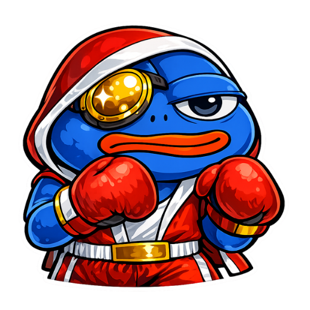

Higher 是怎么一步步长成 Solana 圈最不像钱包的钱包的
从一个"先让你用起来再管安全"的新手钱包，到把自托管、Gasless、社交跟单三件事焊死在同一个 App 里——Higher 的迭代路线藏着 Solana 这三年的缩影。
我第一次注意到 Higher官网 是在它刚冒头的时候——那时候 Solana 钱包圈的格局很清晰：Phantom 占桌面端半壁江山，Solflare 守浏览器扩展，Backpack 走极客路线，没人太把一个只做 iOS 的新手钱包当回事。但 Higher 做了一件当时所有人都觉得"这也行"的事：不强制你先写助记词才能用。
你打开 App，注册完账号，钱包自动就给你建好了，可以直接充值、直接 swap。助记词备份的入口被藏在设置深处，App 会在你入金之后弹几次提醒，但绝不拦着你往前走。这个设计在当时的钱包圈简直是异端——传统自托管钱包的铁律是"先掌握安全再谈功能"，Higher 反过来，先把功能砸你脸上，安全是你自己的事。
它从哪起步：一个不按常理出牌的新手钱包
样本文档里几乎没提 Higher 的早期版本号和迭代时间点——这本身就很说明问题。Solana 生态里的项目喜欢把自己的版本史写得清清楚楚（Phantom 从 v1 到 v2 的每一步都有 changelog），Higher 不做这件事。它的文档结构里没有"版本更新"或"更新日志"这类目录，全部是功能说明和安全指南。要么是早期迭代太快没来得及整理，要么是 Higher 团队有意弱化版本概念——他们更在意"现在这个 App 能做什么"，而不是"我们去年做了什么"。
从功能线索反推，Higher 的起步版本大概只做了三件事：自动创建钱包（Privy 安全基础设施托管密钥碎片）、基础的 swap 和转账、MoonPay 入金出金。这在当时的 Solana 钱包里并不新鲜——Phantom 和 Solflare 早就有了。但 Higher 选了 iOS 单一平台切入，并且把"新手零门槛"做到了极致：你甚至不需要理解什么是私钥、什么是助记词，从下载装上就能在 Higher 里完成第一次 swap。

关键转折点：Gasless 把自托管的最大痛点给抹平了
Higher 真正在 Solana 圈站稳脚跟，是它把 Gasless swap 做成了默认功能。
Solana 链上交易需要 SOL 付 gas，这是所有新用户的第一道坎——你得先去交易所买 SOL、转到钱包、才能开始用。Higher 把这一步给跳过去了：你在 Higher 里 swap POPCAT 到 BONK，完全不需要你钱包里有 SOL，gas 由 Higher 代付。而且这个功能不是限时推广、不是高级会员特权，就是默认行为。
这件事的分量在当时被低估了。传统自托管钱包的"安全优势"一直带着一个"使用门槛高"的枷锁——你得懂技术、得管助记词、得处理 gas。Higher 用 Gasless 把"得先有 SOL"这个硬门槛给拆了，再加上它本来就有的"不强制助记词"流程，等于把 Solana 钱包的使用成本降到了"装个 App 就能用"的程度。
但 Higher 没走托管路线。这是它和 FTX、Celsius 那类平台的根本区别——Higher 是自托管的，你的资产在 Solana 链上，不在 Higher 的服务器里。Higher LLC 倒闭、App Store 下架、服务器关闭，你拿着 12 词助记词就能把钱包导入 Phantom 或 Solflare，资产一分不少。Gasless 是便利层的中心化服务，自托管是安全层的去中心化根基——Higher 把两层切得干干净净。
然后它开始往里塞东西：社交、排行榜、跟单信号
Gasless 跑通之后，Higher 的迭代节奏突然变快了。它没在"把钱包功能做深"这条路上死磕，而是开始往钱包里塞完全不像是钱包该有的东西：社交 Feed、交易员排行榜、Follow 机制。
你打开 Higher，首页不是持仓列表，而是一个像 Twitter 一样的 Feed——你 Follow 的交易员买了什么币、卖了多少、盈亏多少，全部实时流出来。还有 Leaderboard 排行榜，按 PnL、ROI、成交量、Points 四个维度排名，7 天榜、30 天榜随时切换。点进任何一个交易员的主页，能看到他的完整持仓列表、历史交易记录、盈亏曲线——全是链上真实数据，Higher 不做任何美化。
这个方向在当时又是反常规的。钱包圈的共识是"钱包是工具，越简单越好"，没人把社交和交易员榜单往钱包里装。Higher 偏不——它把钱包做成了一个"交易信号 + 执行闭环"的场景：你在 Feed 里看到某个顶级交易员买了一个新币，切到 Higher 的 swap 界面，Gasless 帮你代付 gas，你直接跟着买就行。不需要跳去 DEX、不需要切去 Telegram 看信号组、不需要管 gas——一个 App 里完成从"发现机会"到"执行交易"的完整链路。
Higher 目前还没有自动跟单功能——你 Follow 一个人，他的交易会出现在你的 Feed 里，但你得自己手动点 swap。这点在Higher文档里写得很清楚：Follow 是信号工具，不是量化跟单服务。从产品节奏来看，自动跟单可能是一个"憋了好几个版本"还没放出来的功能——Higher 团队在等 Gasless 的稳定性跑够、社交数据的密度够厚，才会动自动执行这一步。

从迭代节奏看他们一直在死磕什么
把 Higher 已经公开的功能线拉一遍，能看清它的优先级排序：
第一优先级是"降低使用门槛"。自动创建钱包、Gasless swap、不强制助记词、闭环的 MoonPay 入金出金——所有这些功能都是为了让一个完全不懂 Solana 的新手，能用最短路径完成第一次交易。Higher Learn 里反复强调的 "Your keys, your coins — without the usual headache" 不是口号，是它整个产品的设计原点。
第二优先级是"交易场景的闭环"。社交 Feed 解决"发现机会"的问题，排行榜解决"找谁参考"的问题，Gasless 解决"执行交易"的问题——三个功能焊在一起，Higher 就不再只是个钱包，而是一个完整的"轻量交易终端"。
第三优先级是"安全边界的反复重申"。样本文档里有完整的"Higher 关停了怎么办""丢了助记词怎么办""Higher 能不能帮你恢复钱包"三篇长文，还有和 Phantom、FTX 的对比表。Higher 甚至专门写了为什么不做"忘记密码"功能——不是技术做不到，是托管恢复和自托管根本矛盾。它知道自己在"新手友好"这条路上走得太远，所以必须在安全边界上反复给用户打预防针。
而有些事它一直没碰。比如高级交易功能（限价单、杠杆、永续）——Higher 不做，那是 Jupiter、Raydium 这类 DEX 的事。比如浏览器扩展或桌面端——Higher 始终只做 iOS，Android 似乎还在规划中。比如链的扩展——现在只支持 Solana，没有碰 EVM、Sui 或 Aptos。它把所有资源都集中在"iOS 上的 Solana 新手交易"这一个场景里，不贪多。
照这个路线，下一步大概率会往哪走
从迭代规律推的话，我赌三件事：
自动跟单是大概率事件。现在 Follow 只是信号推送，手动执行是最后一步缺口。Gasless 已经稳定了，社交数据也积累够了，自动跟单是整个闭环的自然延伸。但 Higher 会做得比较克制——大概率是你设置好跟单的资金比例和风险上限，它帮你自动执行，但不会替你做决策。
Android 版迟早会出。iOS 单一平台让 Higher 的用户天花板很明显，Solana 圈的 Android 用户比例不低。但 Higher 一直没放 Android，说明它不想随便做个半残版本出来——它要把"自动创建钱包 + Gasless + 社交 Feed"这一整套体验在 Android 上完整复刻，而不是砍功能缩水。
链的扩展会慢慢来。Higher 的核心设计（Privy 密钥分片、Gasless 代付、社交 Feed）理论上可以适配多链，但"新手友好"这个定位决定了它不会同时推多个链——那样反而让用户混乱。更可能的路径是先把 Solana 做到极致，然后再挑一个和 Solana 用户重叠度高的链（比如 Sui）试水。
有一件事我不太确定：Higher 会不会在某个版本把助记词备份的流程改一改？现在它是"先让你用、再反复提醒"，但样本文档里自己也承认这个设计有风险——有人入金之后还没备份就出事了。也许 Higher 一直在等一个更优雅的方案，既能保持新手零门槛，又能在合适的时机把安全流程补上。
Anyway，Higher 这几年的迭代放在 Solana 整个生态里看挺有意思的——它踩中了 Solana 上 meme coin 爆发的那波流量，用 Gasless 和社交把"新手炒 meme"这个场景焊死在自己的 App 里，然后在安全边界上反复给自己打补丁。不像 Phantom 那样走极客路线，也不像 Binance 那样走托管路线，Higher 在中间切出了一条很窄但很准的路：让自托管钱包用起来像托管 App 一样简单，但骨子里还是自托管。
这条路走得通走不通，还得看它能不能把自动跟单放出来、能不能把 Android 和多链做好。但有一点是明确的——Higher 不打算变成第二个 Phantom，它要做的是 Solana 圈最不像钱包的钱包。